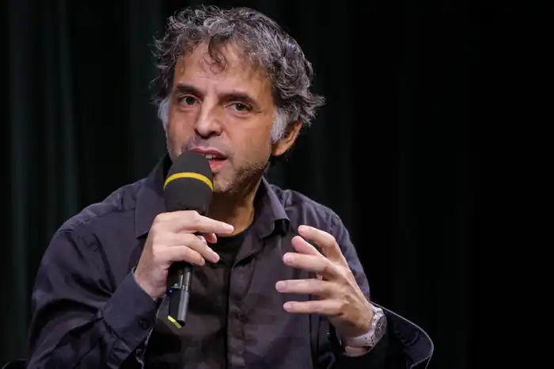
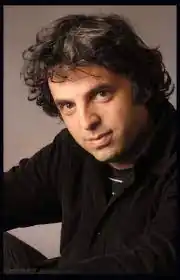

Народився 20 серпня 1967року в Рамат-Гані, Ізраїль у родині Ефраїма та Орени Керет (котрі вижили під час Голокосту). Живе в Тель-Авіві. Одружений на актрисі Ширі Гефен, батько однієї дитини. Викладає в Тель-Авівському університеті та Університеті Бен-Гуріона.
Почав літературну роботу у 1991 році зі статей для газет та сценаріїв театральних постановок. Зараз його основний жанр — короткі абсурдистські розповіді. Перша збірка ("Труби") вийшов в 1992 році, другий — "Моя туга за Кісінджером" (був включений в список 50 найбільш значущих ізраїльських книг всіх часів) — в 1994-му. У 1998 році з'явилася книга "Табір Кнеллера", де автор вперше пробує себе в новій літературній формі — новелі. У 2000 році було видано збірник "Дні, як сьогодні", в якому відбивається життя далеких від політики людей сучасного Ізраїлю, особливо — молоді. На початку 2001 року виходить збірник "Друга можливість", слідом, в 2002 році — "Аз'есьм" ("Ось він я"). У 2009 році, після довгої перерви, був виданий збірник "Коли померли автобуси", що згодом переклала прозаїк, поет й есеїст Лінор Горалік. Всі книги ставали бестселерами. Керету також траплялося працювати і з коміксами. У 1996 році була видана книга коміксів "Ми прийшли не насолоджуватися".
У 1993 році Етгар Керет отримав перший приз на театральному фестивалі в Акко за мюзикл "Операція Ентеббе". Він написав сценарії для декількох сезонів сатиричної телепередачі "Камерний квінтет" і безлічі короткометражних фільмів. Один з них, "Королева Черв'яків" (Skin Deep, 1996 рік) отримав приз Ізраїльської кіноакадемії і завоював перше місце на Мюнхенському фестивалі шкіл кіно. Згідно з розповіддю Керета знята чорна романтична комедія "Самогубці: Історія кохання" (2006) завоювала 9 нагород на різних кінофестивалях. У 2007 році Керет спільно з дружиною поставив фільм "Медузи", який отримав "Золоту Камеру" на Каннському кінофестивалі. В 2009 році вийшов ізраїльсько-австралійський повнометражний мультфільм "9,99 $" за сценарієм Керета.